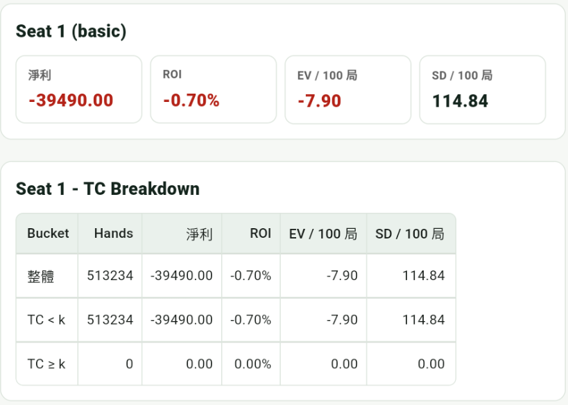

EV・量級・變異數
Blackjack 的重點是：優勢通常很小，但波動很大。以下數字只是量級直覺，不是保證。
基本策略（不算牌）
- 常見 6D / H17 / DAS / 3:2 桌規下，莊家優勢大約是 0.4%-0.7%。
- 如果改成 S17，通常對玩家會再好約 0.1%-0.3%。
- 6:5 blackjack 通常很差，不建議。
量級直覺：若每手下 1 unit，-0.5% 大約等於長期每 200 手輸 1 unit，但短期波動通常遠大於這個數字。
基本策略模擬
以下結果使用基本策略、不算牌，共跑約 500000 局。整體 ROI 是 -0.70%，EV / 100 局是 -7.90，SD / 100 局是 114.84。

這組數字和前面的量級直覺接近：不算牌時 ROI 落在負值，長期會慢慢被莊家優勢吃掉；但每 100 局的 SD 仍有 114.84，表示短期輸贏可能遠大於期望值本身。
加入算牌（Hi-Lo + ramp）
- 桌規好、穿透率不差，而且依照 TC 調整下注時，總體期望值有機會變成正值。
- 常見量級大約是總下注額的 +0.3%-+1.5%。
- 玩家最有感的通常不是那一點點優勢，而是 variance 加上局數。
實際範圍會強烈受到桌規、穿透率、桌限與 bet ramp 影響。
變異數
Blackjack 是小優勢配上大波動的遊戲，短期輸贏很多時候都只是雜訊。
- unit 就是你的基本下注金額。
- 單手常見波動大約是 ±1.1-1.3 units。
- 假設 edge 是 +1%，每手期望值約 +0.01 unit，但單手波動約 ±1.2 units。打 100 手時，期望值只有約 +1 unit，可是出現 ±12 units 的波動仍然完全正常。
App 模擬統計
以下結果使用 Hi-Lo，搭配 Bet Ramp 2/4/6/8/12，共跑 500000 局。整體 ROI 是 +0.08%，EV / 100 局是 +1.66，SD / 100 局是 315.10。

這組數字可以對照前面的量級觀念：ROI 是正的，但只有 +0.08%，仍然是很小的長期優勢。換成每 100 局來看，EV 是 +1.66，但 SD 是 315.10；TC >= k 時 ROI 提高到 +1.22%、EV / 100 局提高到 83.37，不過 SD / 100 局也提高到 741.40。也就是說，算牌能改善長期期望值，但短期仍會被變異數主導。